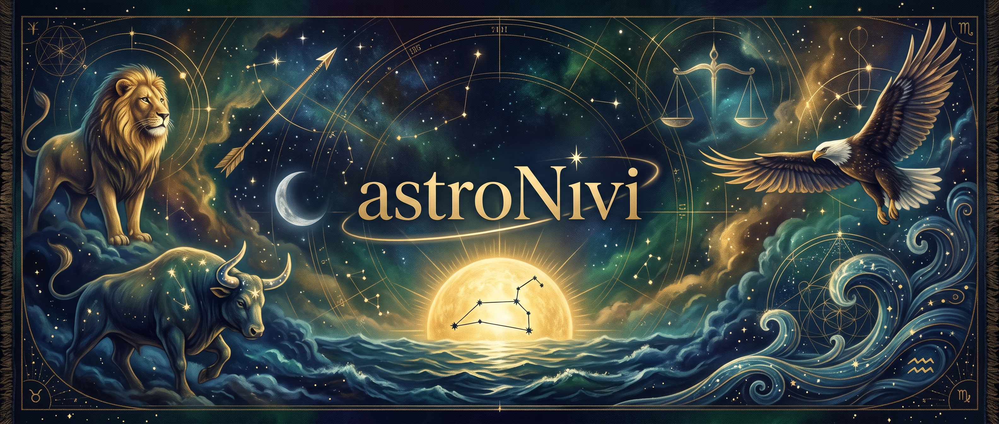

La carta natal de Nivi

De qué se trata
A partir del nombre, la fecha y el lugar de nacimiento de Nivi se elaboraron su carta natal y su mapa de Diseño Humano. Con esa información, una inteligencia artificial actuando como experta en astrología y Diseño Humano redactó un estudio profundo y, a partir de él, se crearon los capítulos que encontrarás aquí: cada uno en audio, con voces de IA, y en PDF para leer y conservar.
Importante: la IA que creó los textos se basó exclusivamente en el mapa astral y en el mapa de Diseño Humano. No sabe nada personal de Nivi, más que su nombre, su fecha y su lugar de nacimiento. Por eso pueden aparecer suposiciones, rasgos de personalidad y circunstancias de la vida de Nivi que no son correctos. Conviene tomar únicamente la información concreta sobre los aspectos generales de la astrología y del Diseño Humano.